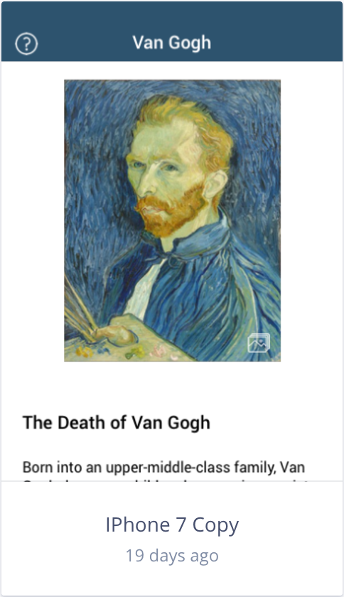
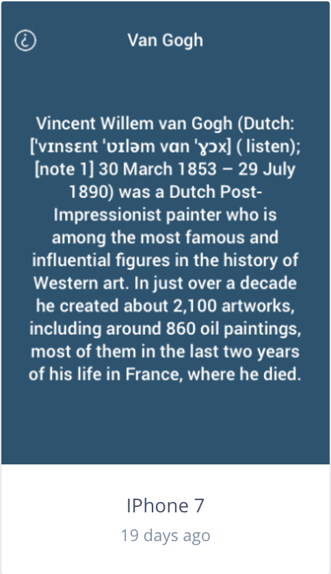
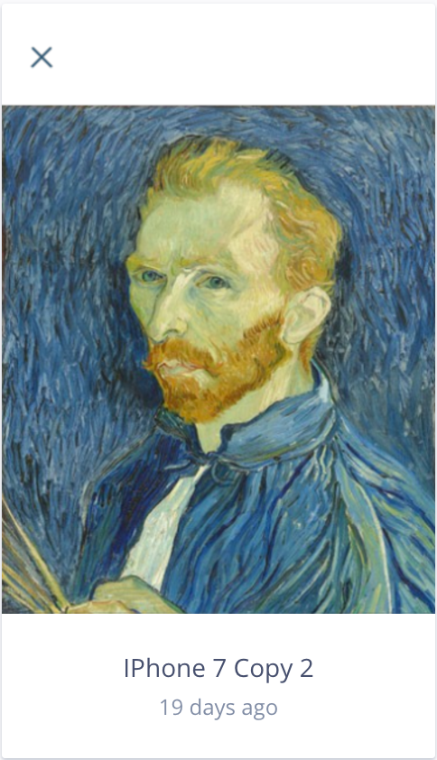
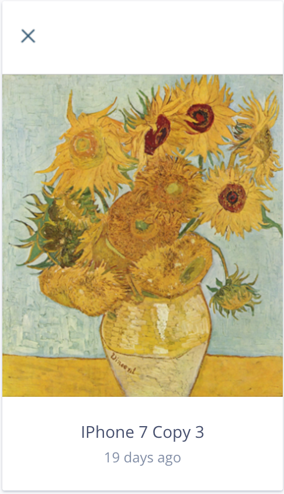
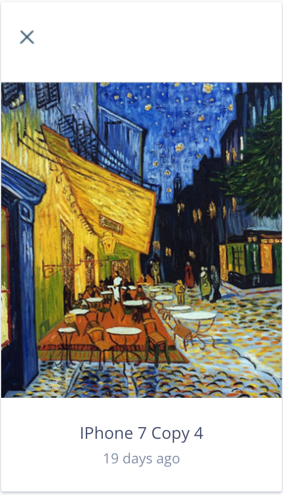
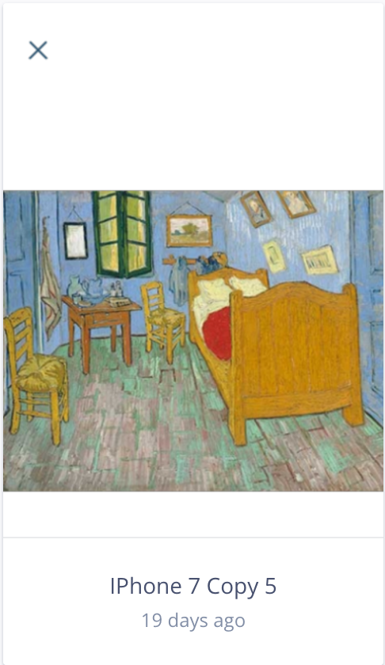
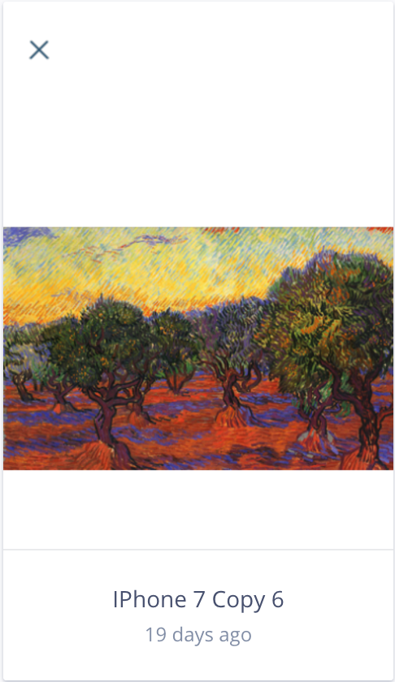

This is a prototype with animations for an application about Van Gogh. There is a photo gallery when tapping on the painting of Van Gogh, a drop-down about section, and a back to top button. This was a group project with Shanjida, Chloe, and Claudia.
Since we do not have a premium account on InVision, the prototype sharing does not work for multiple people. Here are screenshots with explanations of what we have made.
When the user taps on the question mark on the top left, the about screen drops down.
Tapping on it again will bring the about screen back up.
If one taps on the image of Van Gogh, they will be brought to an image gallery. Tapping on the right side of the screen will sweep them to the next image, and the left side will bring them to the previous image. Tapping on the X on the top left corner will close the image gallery.
   